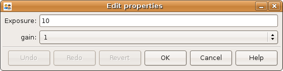
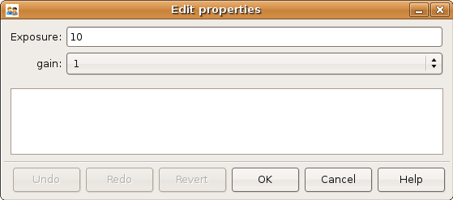
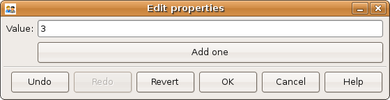
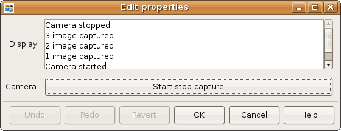
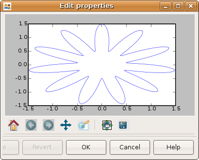
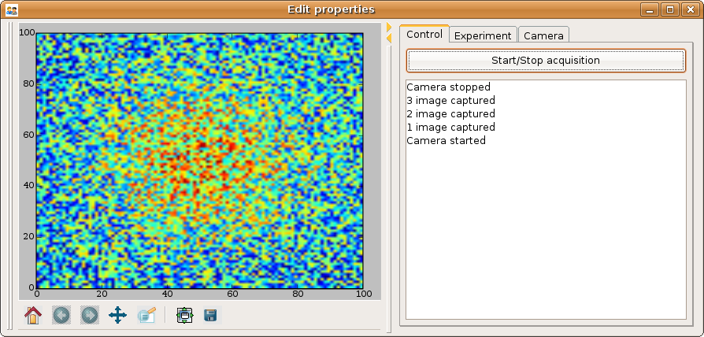
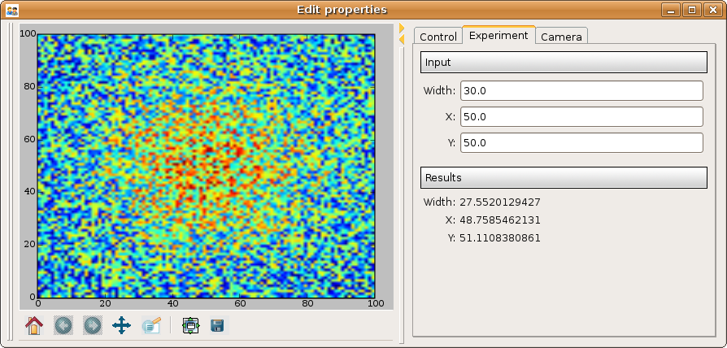
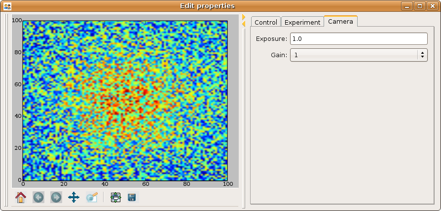

| Author: | Gaël Varoquaux |
|---|---|
| Date: | 2008-10-27 |
| License: | Creative Commons (CC-by-SA 3.0) |
Building interactive Graphical User Interfaces (GUIs) is a hard problem, especially for somebody who has not had training in IT. TraitsUI is a python module that provides a great answer to this problem. I have found that I am incredibly productive when creating graphical application using traitsUI. However I had to learn a few new concepts and would like to lay them down together in order to make it easier for others to follow my footsteps.
This document is intended to help a non-programmer to use traits and traitsUI to write an interactive graphical application. The reader is assumed to have some basic python scripting knowledge (see ref [1] for a basic introduction). Knowledge of numpy/scipy [2] helps understanding the data processing aspects of the examples, but may not be paramount. Some examples rely on matplotlib [3] . This document is not a replacement for user manuals and references of the different packages (traitsUI [4], scipy, matplotlib). It provides a "cookbook" approach, and not a reference.
This tutorial provides step-by-step guide to building a medium-size application. The example chosen is an application used to do control of a camera, analysis of the retrieved data and display of the results. This tutorial focuses on building the general structure and flow-control of the application, and on the aspects specific to traitsUI programming. Interfacing with the hardware or processing the data is left aside. The tutorial progressively introduces the tools used, and in the end present the skeleton of a real application that has been developed for real-time controlling of an experiment, monitoring through a camera, and processing the data. The tutorial goes into more and more intricate details that are necessary to build the final application. Each section is in itself independent of the following ones. The complete beginner trying to use this as an introduction should not expect to understand all the details in a first pass.
The author's experience while working on several projects in various physics labs is that code tends to be created in an 'organic' way, by different people with various levels of qualification in computer development, and that it rapidly decays to a disorganized and hard-to-maintain code base. This tutorial tries to prevent this by building an application shaped for modularity and readability.
Creating user interfaces directly through a toolkit is a time-consuming process. It is also a process that does not integrate well in the scientific-computing work-flow, as, during the elaboration of algorithms and data-flow, the objects that are represented in the GUI are likely to change often.
Visual computing, where the programmer creates first a graphical interface and then writes the callbacks of the graphical objects, gives rise to a slow development cycle, as the work-flow is centered on the GUI, and not on the code.
TraitsUI provides a beautiful answer to this problem by building graphical representations of an object. Traits and TraitsUI have their own manuals (http://code.enthought.com/traits/) and the reader is encouraged to refer to these for more information.
We will use TraitsUI for all our GUIs. This forces us to store all the data and parameters in objects, which is good programming style. The GUI thus reflects the structure of the code, which makes it easier to understand and extend.
In this section we will focus on creating dialogs that allow the user to input parameters graphically in the program.
Software engineering is a difficult field. As programs, grow they become harder and harder to grasp for the developer. This problem is not new and has sometimes been know as the "tar pit". Many attempts have been made to mitigate the difficulties. Most often they consist in finding useful abstractions that allow the developer to manipulate larger ideas, rather than their software implementation.
Code re-use is paramount for good software development. It reduces the number of code-lines required to read and understand and allows to identify large operations in the code. Functions and procedures have been invented to avoid copy and pasting code, and hide the low-level details of an operation.
Object-oriented programming allows yet more modularity and abstraction.
Suppose you want your program to manipulate geometric objects. You can teach the computer that a point is a set of 3 numbers, you can teach it how to rotate that point along a given axis. Now you want to use spheres too. With a bit more work your program has functions to create points, spheres, etc. It knows how to rotate them, to mirror them, to scale them. So in pure procedural programming you will have procedures to rotate, scale, mirror, each one of your objects. If you want to rotate an object you will first have to find its type, then apply the right procedure to rotate it.
Object-oriented programming introduces a new abstraction: the object. It consists of both data (our 3 numbers, in the case of a point), and procedures that use and modify this data (e.g., rotations). The data entries are called "attributes" of the object and the procedures "methods". Thus with object oriented programming an object "knows" how to be rotated.
A point object could be implemented in python with:
from numpy import cos, sin class Point(object): """ 3D Point objects """ x = 0. y = 0. z = 0. def rotate_z(self, theta): """ rotate the point around the Z axis """ self.x = cos(theta) * self.x + sin(theta) * self.y self.y = -sin(theta) * self.x + cos(theta) * self.y
This code creates a Point class. Points objects can be created as instances of the Point class:
>>> p = Point() >>> p.x = 1 >>> p.rotate_z(pi) >>> p.x -1.0 >>> p.y 1.2246467991473532e-16
When manipulating objects, the developer does not need to know the internal details of their procedures. As long as the object has a rotate method, the developer knows how to rotate it.
Note: Beginners often use objects as structures: entities with several data fields useful to pass data around in a program. Objects are much more then that: they have methods. They are 'active' data structures that know how to modify themselves. Part of the point of object-oriented programming is that the object is responsible for modifying itself through its methods. The object therefore takes care of its internal logic and the consistency between its attributes.
In python, dictionaries make great structures and are more suited for such a use than objects.
Suppose you have already created a Point class that tells your program what a point is, but that you also want some points to have a color. Instead of copy-and-pasting the Point class and adding a color attribute, you can define a new class ColoredPoint that inherits all of the Point class's methods and attributes:
class ColoredPoint(Point): """ Colored 3D point """ color = "white"
You do not have to implement rotation for the ColoredPoint class as it has been inherited from the Point class. This is one of the huge gains of object-oriented programming: objects are organized in classes and sub-classes, and method to manipulate objects are derived from the objects parent-ship: a ColoredPoint is only a special case of Point. This proves very handy on large projects.
Note: To stress the differences between classes and their instances (objects), classes are usually named with capital letters, and objects only with lower case letters.
Objects are code entities that can be easily pictured by the developer. The TraitsUI python module allows the user to edit objects attributes with dialogs that form a graphical representation of the object.
In our example application, each process or experimental device is represented in the code as an object. These objects all inherit from the HasTraits, class which supports creating graphical representations of attributes. To be able to build the dialog, the HasTraits class enforces that the types of all the attributes are specified in the class definition.
The HasTraits objects have a configure_traits() method that brings up a dialog to edit the objects' attributes specified in its class definition.
Here we define a camera object (which, in our real world example, is a camera interfaced to python through the ctypes [5] module), and show how to open a dialog to edit its properties :
from enthought.traits.api import * from enthought.traits.ui.api import * class Camera(HasTraits): """ Camera object """ gain = Enum(1, 2, 3, desc="the gain index of the camera", label="gain", ) exposure = CInt(10, desc="the exposure time, in ms", label="Exposure", ) def capture(self): """ Captures an image on the camera and returns it """ print "capturing an image at %i ms exposure, gain: %i" % ( self.exposure, self.gain ) if __name__ == "__main__": camera = Camera() camera.configure_traits() camera.capture()
The camera.configure_traits() call in the above example opens a dialog that allows the user to modify the camera object's attributes:

This dialog forms a graphical representation of our camera object. We will see that it can be embedded in GUI panels to build more complex GUIs that allow us to control many objects.
We will build our application around objects and their graphical representation, as this mapping of the code to the GUI helps the developer to understand the code.
We now know how to build a dialog from objects. If we want to build a complex application we are likely to have several objects, for instance one corresponding to the camera we want to control, and one describing the experiment that the camera monitors. We do not want to have to open a new dialog per object: this would force us to describe the GUI in terms of graphical objects, and not structural objects. We want the GUI to be a natural representation of our objects, and we want the Traits module to take care of that.
The solution is to create a container object, that has as attributes the objects we want to represent. Playing with the View attribute of the object, we can control how the representation generated by Traits looks like (see the TraitsUI manual):
from enthought.traits.api import * from enthought.traits.ui.api import * class Camera(HasTraits): gain = Enum(1, 2, 3, ) exposure = CInt(10, label="Exposure", ) class TextDisplay(HasTraits): string = String() view= View( Item('string', show_label=False, springy=True, style='custom' )) class Container(HasTraits): camera = Instance(Camera) display = Instance(TextDisplay) view = View( Item('camera', style='custom', show_label=False, ), Item('display', style='custom', show_label=False, ), ) container = Container(camera=Camera(), display=TextDisplay()) container.configure_traits()
The call to configure_traits() creates the following dialog, with the representation of the Camera object created is the last example on top, and the Display object below it:

The View attribute of the container object has been tweaked to get the representation we are interested in: traitsUI is told to display the camera item with a 'custom' style, which instructs it to display the representation of the object inside the current panel. The 'show_label' argument is set to False as we do not want the name of the displayed object ('camera', for instance) to appear in the dialog. See the traitsUI manual for more details on this powerful feature.
The camera and display objects are created during the call to the creator of the container object, and passed as its attributes immediately: "container = Container(camera=Camera(), display=TextDisplay())"
If you want to create an application that has a very linear flow, popping up dialogs when user input is required, like a "setup wizard" often used to install programs, you already have all the tools to do it. You can use object oriented programming to write your program, and call the objects configure_traits method each time you need user input. This might an easy way to modify an existing script to make it more user friendly.
The following section will focus on making interactive programs, where the user uses the graphical interface to interact with it in a continuous way.
In an interactive application, the program responds to user interaction. This requires a slight paradigm shift in our programming methods.
In a GUI application, the order in which the different parts of the program are executed is imposed by the user, unlike in a numerical algorithm, for instance, where the developer chooses the order of execution of his program. An event loop allows the programmer to develop an application in which each user action triggers an event, by stacking the user created events on a queue, and processing them in the order in which the appeared.
A complex GUI is made of a large numbers of graphical elements, called widgets (e.g., text boxes, check boxes, buttons, menus). Each of these widgets has specific behaviors associated with user interaction (modifying the content of a text box, clicking on a button, opening a menu). It is natural to use objects to represent the widgets, with their behavior being set in the object's methods.
Dialogs populated with widgets are automatically created by traitsUI in the configure_traits() call. traitsUI allow the developer to not worry about widgets, but to deal only with objects and their attributes. This is a fabulous gain as the widgets no longer appear in the code, but only the attributes they are associated to.
A HasTraits object has an edit_traits() method that creates a graphical panel to edit its attributes. This method creates and returns the panel, but does not start its event loop. The panel is not yet "alive", unlike with the configure_traits() method. Traits uses the wxWidget toolkit by default to create its widget. They can be turned live and displayed by starting a wx application, and its main loop (ie event loop in wx speech).
from enthought.traits.api import * import wx class Counter(HasTraits): value = Int() Counter().edit_traits() wx.PySimpleApp().MainLoop()
The Counter().edit_traits() line creates a counter object and its representation, a dialog with one integer represented. However it does not display it until a wx application is created, and its main loop is started.
Usually it is not necessary to create the wx application yourself, and to start its main loop, traits will do all this for you when the .configure_traits() method is called.
When the event loop is started, the program flow is no longer simply controlled by the code: the control is passed on to the event loop, and it processes events, until the user closes the GUI, and the event loop returns to the code.
Interactions with objects generate events, and these events can be associated to callbacks, ie functions or methods processing the event. In a GUI, callbacks created by user-generated events are placed on an "event stack". The event loop process each call on the event queue one after the other, thus emptying the event queue. The flow of the program is still sequential (two code blocks never run at the same time in an event loop), but the execution order is chosen by the user, and not by the developer.
Defining callbacks for the modification of an attribute foo of a HasTraits object can be done be creating a method called _foo_changed(). Here is an example of a dialog with two textboxes, input and output. Each time input is modified, its content is duplicated to output.
from enthought.traits.api import * class EchoBox(HasTraits): input = Str() output = Str() def _input_changed(self): self.output = self.input EchoBox().configure_traits()
Event that do not correspond to a modification of an attribute can be generated with a Button traits. The callback is then called _foo_fired(). Here is an example of an interactive traitsUI application using a button:
from enthought.traits.api import * from enthought.traits.ui.api import View, Item, ButtonEditor class Counter(HasTraits): value = Int() add_one = Button() def _add_one_fired(self): self.value +=1 view = View('value', Item('add_one', show_label=False )) Counter().configure_traits()
Clicking on the button adds the _add_one_fired() method to the event queue, and this method gets executed as soon as the GUI is ready to handle it. Most of the time that is almost immediately.

This programming pattern is called reactive programming: the objects react to the changes made to their attributes. In complex programs where the order of execution is hard to figure out, and bound to change, like some interactive data processing application, this pattern is extremely efficient.
Using Button traits and a clever set of objects interacting with each others, complex interactive applications can be built. These applications are governed by the events generated by the user, in contrast to script-like applications (batch programming). Executing a long operation in the event loop blocks the reactions of the user-interface, as other events callbacks are not processed as long as the long operation is not finished. In the next section we will see how we can execute several operations in the same time.
A standard python program executes in a sequential way. Consider the following code snippet :
do_a() do_b() do_c()
do_b() is not called until do_a() is finished. Even in event loops everything is sequential. In some situation this can be very limiting. Suppose we want to capture an image from a camera and that it is a very lengthy operation. Suppose also that no other operation in our program requires the capture to be complete. We would like to have a different "timeline" in which the camera capture instructions can happen in a sequential way, while the rest of the program continues in parallel.
Threads are the solution to this problem: a thread is a portion of a program that can run concurrently with other portions of the program.
Programming with threads is difficult as instructions are no longer executed in the order they are specified and the output of a program can vary from a run to another, depending on subtle timing issues. These problems are known as "race conditions" and to minimize them you should avoid accessing the same objects in different threads. Indeed if two different threads are modifying the same object at the same time, unexpected things can happen.
In python a thread can be implemented with a Thread object, from the threading [6] module. To create your own execution thread, subclass the Thread object and put the code that you want to run in a separate thread in its run method. You can start your thread using its start method:
from threading import Thread from time import sleep class MyThread(Thread): def run(self): sleep(2) print "MyThread done" my_thread = MyThread() my_thread.start() print "Main thread done"
The above code yields the following output:
Main thread done MyThread done
Suppose you have a long-running job in a TraitsUI application. If you implement this job as an event placed on the event loop stack, it is going to freeze the event loop while running, and thus freeze the UI, as events will accumulate on the stack, but will not be processed as long as the long-running job is not done (remember, the event loop is sequential). To keep the UI responsive, a thread is the natural answer.
Most likely you will want to display the results of your long-running job on the GUI. However, as usual with threads, one has to be careful not to trigger race-conditions. Naively manipulating the GUI objects in your thread will lead to race conditions, and unpredictable crash: suppose the GUI was repainting itself (due to a window move, for instance) when you modify it.
In a wxPython application, if you start a thread, GUI event will still be processed by the GUI event loop. To avoid collisions between your thread and the event loop, the proper way of modifying a GUI object is to insert the modifications in the event loop, using the GUI.invoke_later() call. That way the GUI will apply your instructions when it has time.
Recent versions of the TraitsUI module (post October 2006) propagate the changes you make to a HasTraits object to its representation in a thread-safe way. However it is important to have in mind that modifying an object with a graphical representation is likely to trigger race-conditions as it might be modified by the graphical toolkit while you are accessing it. Here is an example of code inserting the modification to traits objects by hand in the event loop:
from threading import Thread from time import sleep from enthought.traits.api import * from enthought.traits.ui.api import View, Item, ButtonEditor class TextDisplay(HasTraits): string = String() view= View( Item('string',show_label=False, springy=True, style='custom' )) class CaptureThread(Thread): def run(self): self.display.string = 'Camera started\n' + self.display.string n_img = 0 while not self.wants_abort: sleep(.5) n_img += 1 self.display.string = '%d image captured\n' % n_img \ + self.display.string self.display.string = 'Camera stopped\n' + self.display.string class Camera(HasTraits): start_stop_capture = Button() display = Instance(TextDisplay) capture_thread = Instance(CaptureThread) view = View( Item('start_stop_capture', show_label=False )) def _start_stop_capture_fired(self): if self.capture_thread and self.capture_thread.isAlive(): self.capture_thread.wants_abort = True else: self.capture_thread = CaptureThread() self.capture_thread.wants_abort = False self.capture_thread.display = self.display self.capture_thread.start() class MainWindow(HasTraits): display = Instance(TextDisplay, ()) camera = Instance(Camera) def _camera_default(self): return Camera(display=self.display) view = View('display', 'camera', style="custom", resizable=True) if __name__ == '__main__': MainWindow().configure_traits()
This creates an application with a button that starts or stop a continuous camera acquisition loop.

When the "Start stop capture" button is pressed the _start_stop_capture_fired method is called. It checks to see if a CaptureThread is running or not. If none is running, it starts a new one. If one is running, it sets its wants_abort attribute to true.
The thread checks every half a second to see if its attribute wants_abort has been set to true. If this is the case, it aborts. This is a simple way of ending the thread through a GUI event.
Using different threads lets the operations avoid blocking the user interface, while also staying responsive to other events. In the real-world application that serves as the basis of this tutorial, there are 2 threads and a GUI event loop.
The first thread is an acquisition loop, during which the program loops, waiting for a image to be captured on the camera (the camera is controlled by external signals). Once the image is captured and transfered to the computer, the acquisition thread saves it to the disk and spawns a thread to process the data, then returns to waiting for new data while the processing thread processes the data. Once the processing thread is done, it displays its results (by inserting the display events in the GUI event loop) and dies. The acquisition thread refuses to spawn a new processing thread if there still is one running. This makes sure that data is never lost, no matter how long the processing might be.
There are thus up to 3 set of instructions running concurrently: the GUI event loop, responding to user-generated events, the acquisition loop, responding to hardware-generated events, and the processing jobs, doing the numerical intensive work.
In the next section we are going to see how to add a home-made element to traits, in order to add new possibilities to our application.
This section gives a few guidelines on how to build your own traits editor. A traits editor is the view associated to each traits that allows that graphically edit its value. We can twist a bit the notion and simply use it to graphically represent the attribute. This section involves a bit of wxPython code that may be hard to understand if you do not know wxPython, but it will bring a lot of power and flexibility to you use of traits. The reason it appears in this tutorial is that I wanted to insert a matplotlib in my traitsUI application. It is not necessary to fully understand the code of this section to be able to read on.
I should stress that there already exists a plotting module that provides traits editors for plotting, and that is very well integrated with traits: chaco [7].
To use traits, the developer does not need to know its internals. However traits does not provide an editor for every need. If we want to insert a powerful tool for plotting we have to get our hands a bit dirty and create our own traits editor.
This involves some wxPython coding, as we need to translate a wxPython object in a by traits editor providing the corresponding API (i.e. the standard way of building a traits editor, so that the traits framework can do it automatically.
Traits editor are created by an editor factory that instanciates an editor class and passes it the object that the editor represents in its value attribute. It calls the editor int() method to create the wx widget. Here we create a wx figure canvas from a matplotlib figure using the matplotlib wx backend. Instead of displaying this widget, we set its control as the control attribute of the editor. TraitsUI takes care of displaying and positioning the editor.
import wx import matplotlib # We want matplotlib to use a wxPython backend matplotlib.use('WXAgg') from matplotlib.backends.backend_wxagg import FigureCanvasWxAgg as FigureCanvas from matplotlib.figure import Figure from matplotlib.backends.backend_wx import NavigationToolbar2Wx from enthought.traits.api import Any, Instance from enthought.traits.ui.wx.editor import Editor from enthought.traits.ui.wx.basic_editor_factory import BasicEditorFactory class _MPLFigureEditor(Editor): scrollable = True def init(self, parent): self.control = self._create_canvas(parent) self.set_tooltip() def update_editor(self): pass def _create_canvas(self, parent): """ Create the MPL canvas. """ # The panel lets us add additional controls. panel = wx.Panel(parent, -1, style=wx.CLIP_CHILDREN) sizer = wx.BoxSizer(wx.VERTICAL) panel.SetSizer(sizer) # matplotlib commands to create a canvas mpl_control = FigureCanvas(panel, -1, self.value) sizer.Add(mpl_control, 1, wx.LEFT | wx.TOP | wx.GROW) toolbar = NavigationToolbar2Wx(mpl_control) sizer.Add(toolbar, 0, wx.EXPAND) self.value.canvas.SetMinSize((10,10)) return panel class MPLFigureEditor(BasicEditorFactory): klass = _MPLFigureEditor if __name__ == "__main__": # Create a window to demo the editor from enthought.traits.api import HasTraits from enthought.traits.ui.api import View, Item from numpy import sin, cos, linspace, pi class Test(HasTraits): figure = Instance(Figure, ()) view = View(Item('figure', editor=MPLFigureEditor(), show_label=False), width=400, height=300, resizable=True) def __init__(self): super(Test, self).__init__() axes = self.figure.add_subplot(111) t = linspace(0, 2*pi, 200) axes.plot(sin(t)*(1+0.5*cos(11*t)), cos(t)*(1+0.5*cos(11*t))) Test().configure_traits()
This code first creates a traitsUI editor for a matplotlib figure, and then a small dialog to illustrate how it works:

The matplotlib figure traits editor created in the above example can be imported in a traitsUI application and combined with the power of traits. This editor allows to insert a matplotlib figure in a traitsUI dialog. It can be modified using reactive programming, as demonstrated in section 3 of this tutorial. However, once the dialog is up and running, you have to call self.figure.canvas.draw() to update the canvas if you made modifications to the figure. The matplotlib user guide [3] details how this object can be used for plotting.
The real world problem that motivated the writing of this tutorial is an application that retrieves data from a camera, processes it and displays results and controls to the user. We now have all the tools to build such an application. This section gives the code of a skeleton of this application. This application actually controls a camera on a physics experiment (Bose-Einstein condensation), at the university of Toronto.
The reason I am providing this code is to give an example to study of how a full-blown application can be built. This code can be found in the tutorial's zip file (it is the file application.py).
The MPLFigureEditor is imported from last example.
from threading import Thread from time import sleep from enthought.traits.api import * from enthought.traits.ui.api import View, Item, Group, HSplit, Handler from enthought.traits.ui.menu import NoButtons from mpl_figure_editor import MPLFigureEditor from matplotlib.figure import Figure from scipy import * import wx
These objects store information for the program to interact with the user via traitsUI.
class Experiment(HasTraits): """ Object that contains the parameters that control the experiment, modified by the user. """ width = Float(30, label="Width", desc="width of the cloud") x = Float(50, label="X", desc="X position of the center") y = Float(50, label="Y", desc="Y position of the center") class Results(HasTraits): """ Object used to display the results. """ width = Float(30, label="Width", desc="width of the cloud") x = Float(50, label="X", desc="X position of the center") y = Float(50, label="Y", desc="Y position of the center") view = View( Item('width', style='readonly'), Item('x', style='readonly'), Item('y', style='readonly'), )
The camera object also is a real object, and not only a data structure: it has a method to acquire an image (or in our case simulate acquiring), using its attributes as parameters for the acquisition.
class Camera(HasTraits): """ Camera objects. Implements both the camera parameters controls, and the picture acquisition. """ exposure = Float(1, label="Exposure", desc="exposure, in ms") gain = Enum(1, 2, 3, label="Gain", desc="gain") def acquire(self, experiment): X, Y = indices((100, 100)) Z = exp(-((X-experiment.x)**2+(Y-experiment.y)**2)/experiment.width**2) Z += 1-2*rand(100,100) Z *= self.exposure Z[Z>2] = 2 Z = Z**self.gain return(Z)
There are three threads in this application:
The GUI event loop, the only thread running at the start of the program.
The acquisition thread, started through the GUI. This thread is an infinite loop that waits for the camera to be triggered, retrieves the images, displays them, and spawns the processing thread for each image recieved.
The processing thread, started by the acquisition thread. This thread is responsible for the numerical intensive work of the application. it processes the data and displays the results. It dies when it is done. One processing thread runs per shot acquired on the camera, but to avoid accumulation of threads in the case that the processing takes longer than the time lapse between two images, the acquisition thread checks that the processing thread is done before spawning a new one.
def process(image, results_obj): """ Function called to do the processing """ X, Y = indices(image.shape) x = sum(X*image)/sum(image) y = sum(Y*image)/sum(image) width = sqrt(abs(sum(((X-x)**2+(Y-y)**2)*image)/sum(image))) results_obj.x = x results_obj.y = y results_obj.width = width class AcquisitionThread(Thread): """ Acquisition loop. This is the worker thread that retrieves images from the camera, displays them, and spawns the processing job. """ wants_abort = False def process(self, image): """ Spawns the processing job. """ try: if self.processing_job.isAlive(): self.display("Processing to slow") return except AttributeError: pass self.processing_job = Thread(target=process, args=(image, self.results)) self.processing_job.start() def run(self): """ Runs the acquisition loop. """ self.display('Camera started') n_img = 0 while not self.wants_abort: n_img += 1 img =self.acquire(self.experiment) self.display('%d image captured' % n_img) self.image_show(img) self.process(img) sleep(1) self.display('Camera stopped')
The GUI of this application is separated in two (and thus created by a sub-class of SplitApplicationWindow).
On the left a plotting area, made of an MPL figure, and its editor, displays the images acquired by the camera.
On the right a panel hosts the TraitsUI representation of a ControlPanel object. This object is mainly a container for our other objects, but it also has an Button for starting or stopping the acquisition, and a string (represented by a textbox) to display informations on the acquisition process. The view attribute is tweaked to produce a pleasant and usable dialog. Tabs are used as it help the display to be light and clear.
class ControlPanel(HasTraits): """ This object is the core of the traitsUI interface. Its view is the right panel of the application, and it hosts the method for interaction between the objects and the GUI. """ experiment = Instance(Experiment, ()) camera = Instance(Camera, ()) figure = Instance(Figure) results = Instance(Results, ()) start_stop_acquisition = Button("Start/Stop acquisition") results_string = String() acquisition_thread = Instance(AcquisitionThread) view = View(Group( Group( Item('start_stop_acquisition', show_label=False ), Item('results_string',show_label=False, springy=True, style='custom' ), label="Control", dock='tab',), Group( Group( Item('experiment', style='custom', show_label=False), label="Input",), Group( Item('results', style='custom', show_label=False), label="Results",), label='Experiment', dock="tab"), Item('camera', style='custom', show_label=False, dock="tab"), layout='tabbed'), ) def _start_stop_acquisition_fired(self): """ Callback of the "start stop acquisition" button. This starts the acquisition thread, or kills it/ """ if self.acquisition_thread and self.acquisition_thread.isAlive(): self.acquisition_thread.wants_abort = True else: self.acquisition_thread = AcquisitionThread() self.acquisition_thread.display = self.add_line self.acquisition_thread.acquire = self.camera.acquire self.acquisition_thread.experiment = self.experiment self.acquisition_thread.image_show = self.image_show self.acquisition_thread.results = self.results self.acquisition_thread.start() def add_line(self, string): """ Adds a line to the textbox display. """ self.results_string = (string + "\n" + self.results_string)[0:1000] def image_show(self, image): """ Plots an image on the canvas in a thread safe way. """ self.figure.axes[0].images=[] self.figure.axes[0].imshow(image, aspect='auto') wx.CallAfter(self.figure.canvas.draw) class MainWindowHandler(Handler): def close(self, info, is_OK): if ( info.object.panel.acquisition_thread and info.object.panel.acquisition_thread.isAlive() ): info.object.panel.acquisition_thread.wants_abort = True while info.object.panel.acquisition_thread.isAlive(): sleep(0.1) wx.Yield() return True class MainWindow(HasTraits): """ The main window, here go the instructions to create and destroy the application. """ figure = Instance(Figure) panel = Instance(ControlPanel) def _figure_default(self): figure = Figure() figure.add_axes([0.05, 0.04, 0.9, 0.92]) return figure def _panel_default(self): return ControlPanel(figure=self.figure) view = View(HSplit( Item('figure', editor=MPLFigureEditor(), dock='vertical'), Item('panel', style="custom"), show_labels=False, ), resizable=True, height=0.75, width=0.75, handler=MainWindowHandler(), buttons=NoButtons) if __name__ == '__main__': MainWindow().configure_traits()
When the acquisition loop is created and running, the mock camera object produces noisy gaussian images, and the processing code estimates the parameters of the gaussian.
Here are screenshots of the three different tabs of the application:
  
Conclusion
I have summarized here all what most scientists need to learn in order to be able to start building applications with traitsUI. Using the traitsUI module to its full power requires you to move away from the procedural type of programming most scientists are used to, and think more in terms of objects and flow of information and control between them. I have found that this paradigm shift, although a bit hard, has been incredibly rewarding in terms of my own productivity and my ability to write compact and readable code.
Good luck!
Acknowledgments
I would like to thank the people on the enthought-dev mailing-list, especially Prabhu Ramachandran and David Morrill, for all the help they gave me, and Janet Swisher for reviewing this document. Big thanks go to enthought for developing the traits and traitsUI modules, and making them open-source. Finally the python, the numpy, and the matplotlib community deserve many thanks for both writing such great software, and being so helpful on the mailing lists.
References
| [1] | python tutorial: http://docs.python.org/tut/tut.html |
| [2] | The scipy website: http://www.scipy.org |
| [3] | The matplotlib website: http://matplotlib.sourceforge.net |
| [4] | The traits and traitsUI user guide: http://code.enthought.com/traits |
| [5] | ctypes: http://starship.python.net/crew/theller/ctypes/ |
| [6] | threading: http://docs.python.org/lib/module-threading.html |
| [7] | chaco: http://code.enthought.com/chaco/ |